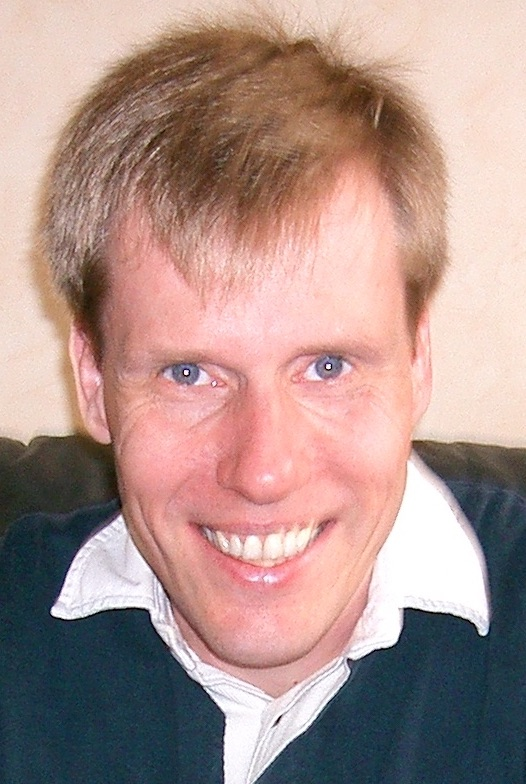

STACK research team (IMT Atlantique, INRIA, LS2N)
|
Mario Südholt DAPI IMT Atlantique 4, rue Alfred Kastler F - 44307 Nantes cedex 3 France |
Office: B224 Tel : +33 (0)2.51.85.82.47 Fax : +33 (0)2.51.85.82.49 sudholt (at) imt-atlantique (dot) fr sudholt.eu |